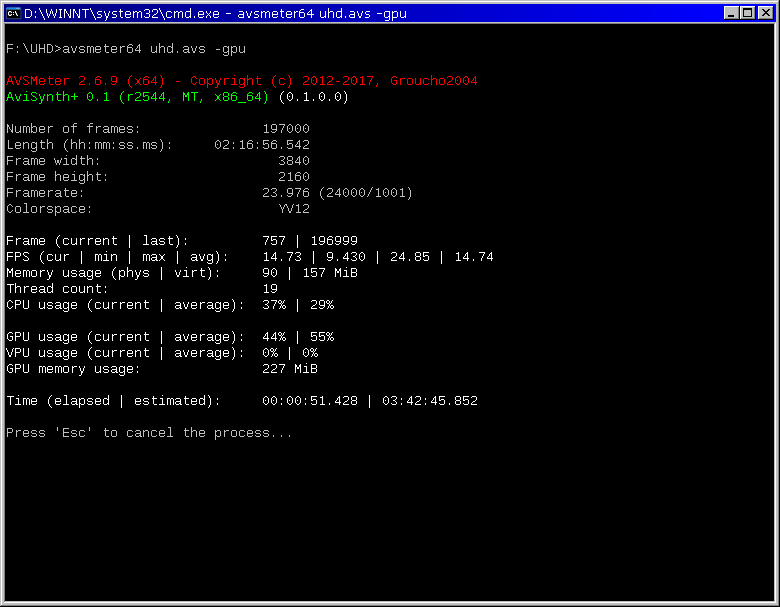
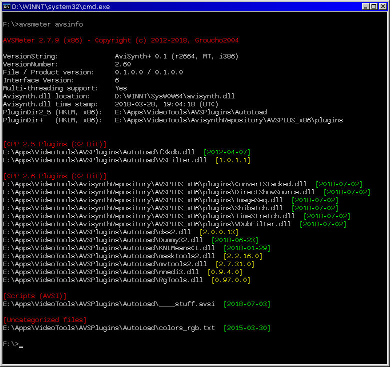

AVSMeter
AVSMeter is a CLI (command line interface)
tool which measures the speed/efficiency of Avisynth scripts and
checks if Avisynth and its plugin sub-system are set up and working
correctly.
Features:
- "Running" scripts with virtually no overhead, displaying clip
info, CPU/GPU usage / memory usage and the minimum, maximum and
average frames processed per second. Measuring how fast Avisynth
can serve frames to a client application (x264, VirtualDub) and
establishing CPU/GPU/memory usage helps with optimizing scripts
and tracking down crashes, slowdowns and bottlenecks.
- Performing a thorough test of the Avisynth installation and
associated plugins, checking if external dependencies are
installed, etc.


Command
line usage 1 (analyse a script): AVSMeter script.avs
[switches]
Switches:
-avsdll
Specify avisynth.dll to be used
-info
[-i] Display clip info
-log
[-l] Create log file
-csv
Create csv file
-gpu
Display GPU/VPU usage (requires GPU-Z)
-range=first,last Set frame range
-timelimit=n
Set time limit (seconds)
-priority=n Set
process priority (1:low, 2:normal, 3:high)
-o
Omit script
pre-scanning
Command line usage 2 (display extended Avisynth
info): AVSMeter avsinfo [switches]
Switches:
-avsdll
Specify avisynth.dll to be used
-c
Specify custom plugin directory
-log
[-l] Create log file
-lf
Add internal/external
functions to the log file
"avsinfo"
Displays extended info about the installed Avisynth version and
the plugin sub-system. If a custom avisynth.dll is specified in the
ini file, info about that file will be displayed. The "avsinfo"
command can be combined with "-log" in order to save the info to a
log file. The log file contains additional info about OS/hardware, a
list of DLL dependencies for avisynth.dll and all auto-load plugins
and optionally ("-lf") a list of internal/external Avisynth
functions.
"-c"
In combination with "avsinfo", this switch allows to select a
custom plugin directory (other than the directory/directories
referenced in the registry).
"-lf"
In combination with "avsinfo" and "-log", this
switch adds a list of internal/external functions to the log file.
"-avsdll"
The user can specify the avisynth.dll to be used (a file open
dialog lets the user select it). Without this switch AVSMeter will
attempt to load avisynth.dll through the standard Windows search
hierarchy which is the default behaviour.
"-log"
Creates a log file with various details about the installed
Avisynth version, clip info, runtime results, a copy of the script
and a performance data table with the measured details about each
frame/frame interval.
Note: The numbering of the frames in the
performance data section is not zero-based, i.e. the first frame is
1, not 0.
"-csv"
Creates a CSV file containing the performance data formatted as
comma-separated values for direct import in Excel or a similar
spread sheet program (OpenOffice, LibreOffice).
Note: The numbering of the frames in the .csv file is
not zero-based, i.e. the first frame is 1, not 0.
"-gpu"
Enables display of the GPU/VPU usage which of course is only
useful if a filter that uses the GPU is in the chain. AVSMeter uses
GPU-Z
to access the graphics card sensors through a shared memory space.
GPU-Z has to be running (the window can be minimized to the system
tray) before running AVSMeter.
"-range=first,last"
Specify the range of frames to be processed. For example,
"-range=1500,1999" processes 500 frames starting at frame 1500.
Without "-range" AVSMeter processes all frames of the script.
"-timelimit=n"
Specify a time limit (in seconds) after which the program stops
reading frames and terminates.
"-o"
AVSMeter runs a quick test on a few frames at the start in order to
measure the frames/second that Avisynth returns for a given script.
The result is used to determine a suitable interval for measuring
CPU/GPU/memory usage and minimizing the overhead of these
measurements.
When "-o" is used, that test will be omitted. This can be
useful if, for example, AVSMeter is used with a script that writes a
sequence of images where the speed test is irrelevant.
For normal operation, e.g. testing the speed
of a script, this switch should not be used, otherwise the
accuracy of the FPS/TPF measurements will be reduced, particularly
for fast scripts.
INI file settings
AVSMeter checks if a settings file ("AVSMeter.ini") exists in the
directory from where it is started. If not, it will be created with
the default settings.
Note: If
applicable, command line switches override INI settings.
Supported settings for the INI file (default values in red):
"DisplayFPS" (0 or 1)
If set to "1", frames/second is printed to the console.
"DisplayTPF" (0 or 1):
If set to "1", time/frame (in milliseconds) is printed to the
console.
"PauseBeforeExit" (0 or 1):
If set to "1", pauses the program at the end and returns to the
console prompt only after pressing "ESC".
"CreateLog" (0 or 1):
Creates a log file with various details about the installed Avisynth
version, clip info, runtime results, a copy of the script and a
performance data table with the measured details about each
frame/frame interval.
Note: The numbering of the frames in the
performance data section is not zero-based, i.e. the first frame is
1, not 0.
"CreateCSV" (0 or 1):
Creates a CSV file containing the performance data formatted as
comma-separated values for direct import in Excel or a similar
spread sheet program (OpenOffice, LibreOffice).
Note: The numbering of the frames in the .csv file is
not zero-based, i.e. the first frame is 1, not 0.
"LogDirectory"
The user can specify a directory in which all log files are
stored. This has to be a fully qualified
path, for example "LogDirectory=c:\LogFiles" (without the quotes).
The default is an empty string
which means that all log files are stored in the script directory
or, in case the "-avsinfo"
switch was used, the current (working) directory.
Note: This setting is ignored if
"LogUseFileSaveDialog" is set to "1".
"LogFileDateTimeSuffix" (0 or 1):
If set to "1", adds a date/time suffix to all .log and .csv
files.
Note: This setting is ignored if
"LogUseFileSaveDialog" is set to "1".
"LogUseFileSaveDialog" (0
or 1):
If set to "1", AVSMeter prompts with a file save dialog so the
user can choose where to save .log/.csv files.
"MonitorGPULoad" (0 or 1):
If set to "1", enables display of the GPU/VPU usage which of course
is only useful if a filter that uses the GPU is in the chain.
AVSMeter uses GPU-Z to access the graphics card sensors through a
shared memory interface. GPU-Z must be running in order to use this
feature.
"TimeLimit" (1 - 999999):
Specify a time limit (in seconds) after which the program stops
reading frames and terminates. Setting this to "-1" disables the feature.
"AVSDLL"
The user can specify the avisynth.dll to be used. This has to be a
fully qualified path, for example
"AVSDLL=d:\apps\avisynth\avisynth.dll" (without the quotes). The default is an empty string which
means that AVSMeter will attempt to load avisynth.dll through the
standard Windows search hierarchy.
"FrameRange" (first,last):
Specify the range of frames to be processed. "FrameRange=0,-1" processes all frames in the
script. For example, "FrameRange=1500,1999" processes 500 frames
starting at frame 1500.
"AllowOnlyOneInstance" (0 or 1):
If set to "1", only one instance of AVSMeter can be started.
"ProcessPriority" (1, 2 or 3):
Specify the process priority for AVSMeter and all attached processes
(1: low, 2: normal, 3: high).
"InvokeDistributor" (0 or 1):
For users of SEt's Avisynth MT: If set to "1", adds the
"Distributor" call internally if the script uses one of the MT Modes
1~4.
"ConUseSTDOUT" (0 or 1):
If set to "1", directs all console output to stdout. The default
setting "0" uses stderr except the "command line usage" message
which always goes to stdout.
"UseColor" (0 or 1):
If set to "0", coloring of the console output is disabled.